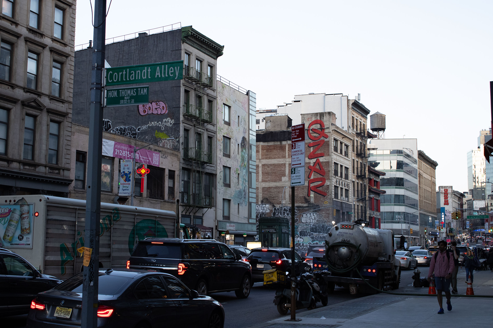

A History of NYC Graffiti by Araceli
 More Rooftops, March 13, 2024. Manhattan Bridge, NYC.
More Rooftops, March 13, 2024. Manhattan Bridge, NYC.
Graffiti is often closely associated with street art which encompasses legal forms of artistic expression aimed at beautifying urban spaces and engaging the local community [1]. However, graffiti itself is considered vandalism, involving markings or art made without permission, often as a form of personal expression or rebellion. Despite its illegal status, graffiti has a long history within human culture dating back to ancient civilizations such as the Romans and Mayans [2]. Early forms of graffiti first appeared in the United States amongst the cholos of Los Angeles, California, although it was mostly limited to territory markings by gangs [2].
 manhattan bridge view, march 13, 2024. manhattan bridge, nyc.
manhattan bridge view, march 13, 2024. manhattan bridge, nyc.Modern graffiti as we know it emerged in cities like Philadelphia in the early 1960s from artists such as Cornbread or Cool Earl [3] before spreading to NYC in the late '60s and early '70s. Early pioneers of graffiti in NYC, such as JULIO 204 and TAKI 183, laid the groundwork for the movement by often tagging subway cars and public spaces to gain recognition [3].
The growth and presence of the NYC Subway system played a significant role in enabling the growth of graffiti during this era. Due to limited budgets, efforts to control vandalism were largely ineffective making the removal of graffiti a challenging task [4]. In the early days of graffiti in NYC, it was mostly limited to "tagging," where graffiti artists, known as "writers," left their stylized signatures across public spaces [4]. The goal amongst writers was to gain recognition through the sheer volume of tags which lead to the emergence of "bombing, “ which refers to writers covering as many surfaces as possible with graffiti [3]. In subsequent years, driven by competition among peers, graffiti writers evolved their styles. They explored new techniques such as script and calligraphic styles and experimented with outlining letters and using different spray can caps [4]. An important evolution of style was the increasing the scales of artworks. One notable artist, SUPER KOOL 223, popularized the term "masterpiece" to describe large-scale and elaborate graffiti artworks which gain respect from peers and showcase artists’ commitment to their craft [3].
 graffiti masterpiece, march 3, 2024. canal st & cortlandt alley, nyc.
During the 1970s in the golden era of graffiti in NYC, artists faced relatively limited pushback from the city. This allowed them to innovate freely, laying the groundwork for future generations of graffiti artists [4]. Entire subway cars were covered in graffiti and became canvases for these artists, showcasing their evolving styles and techniques. Recognizing the artistic richness of graffiti, figures like Hugo Martinez established platforms like the United Graffiti Artists (UGA) group, which promoted graffiti in official art galleries. These initiatives contributed to the growing recognition of graffiti as a legitimate art form [4].
However, in 1972, Mayor John Lindsay declared a war on graffiti by initiating a crackdown on graffiti vandalism. By the 1980s, increased surveillance and security measures made it significantly harder to tag subway cars. This led to a slowdown in graffiti culture as strict monitoring of train yards and the disappearance of popular tagging spots discouraged artists [4]. Furthermore, the backdrop of the crack epidemic made the streets even more dangerous, deterring writers from continuing their practice. The removal of graffiti became more rapid which limited the time for people to appreciate the artworks and further discouraged artists [3]. The last train car featuring graffiti was effectively removed from service in 1989. In 1995, Mayor Rudolph Giuliani launched one of the largest anti-graffiti campaigns in United States history. This campaign included banning the sale of aerosol-spray paint cans to minors and increased enforcement measures [4].
Despite efforts to eradicate the presence of graffiti throughout NYC, graffiti is still heavily present today. Artists such as Jean-Michel Basquiat and Banksy [3] have gone on to further push graffiti into the mainstream culture and have come to make graffiti something that is largely respected amongst certain subcultures. Modern challenges toward graffiti include its gentrification for profit by corporations. For example, in 2016 citizenM hotels hired artists to create a “free” museum inside their hotel called the Museum of Street Art (MoSA) [5]. These artists were paid for their work which they made within the interior of the hotel walls. Such practices reduce the fundamental rebellious nature of graffiti, defined by its illegality, and make it into a commodified aesthetic.
 road and storefront, march 12, 2024. broadway & canal st, nyc.
road and storefront, march 12, 2024. broadway & canal st, nyc. Regardless of challenges, graffiti has left an indelible mark on the landscape of New York City. From its beginnings as a form of rebellion and self-expression to its evolution into a recognized art form, graffiti has played a significant role in shaping the cultural identity of the city. As artists continue to push the boundaries of creativity and innovation, graffiti will continue to evolve and leave its mark on the cityscape.
Sources:
- [1] Art, Trendy. “What’s the Difference Between Street Art and Graffiti ?” The Trendy Art, 30 June 2023
- [2] Decker, Scott H., and Glen D. Curry. “Graffiti Definition, History, and Facts.” Encyclopedia Britannica, 7 Mar. 2024
- [3] Ehrlich, Dimitri. “Summer Guide - a History of Graffiti in Its Own Words.” New York Magazine, 22 June 2006
- [4] Wikipedia contributors. “Graffiti in New York City.” Wikipedia, 13 Mar. 2024
- [5] Alioto, Daisy. “How Graffiti Became Gentrified.” The New Republic, 25 Mar. 2024
- [6] Campbell, Jon. “Graffiti as a Hate Crime Divides NY Gov. Hochul and Progressive Democrats.” Gothamist, 12 Feb. 2024
- [7] “Graffiti.” ASU Center for Problem-Oriented Policing, 16 Oct. 2022
- [8] Collins, Dave. “How Do Graffiti Artists Get Up There? Exploring Artists’ Techniques and Tools | Will Power.” Hip Hop Is My Religion, 9 Apr. 2023
- [9] Importer. “‘the Original Street Style – Lettering Malandro’ Exhibition Mexico City.” MOLOTOWTM Blog, 25 Feb. 2021
- [10] “Graffiti Styles: Top 10 Types of Graffiti Explained - Eden Gallery.” EDEN Gallery